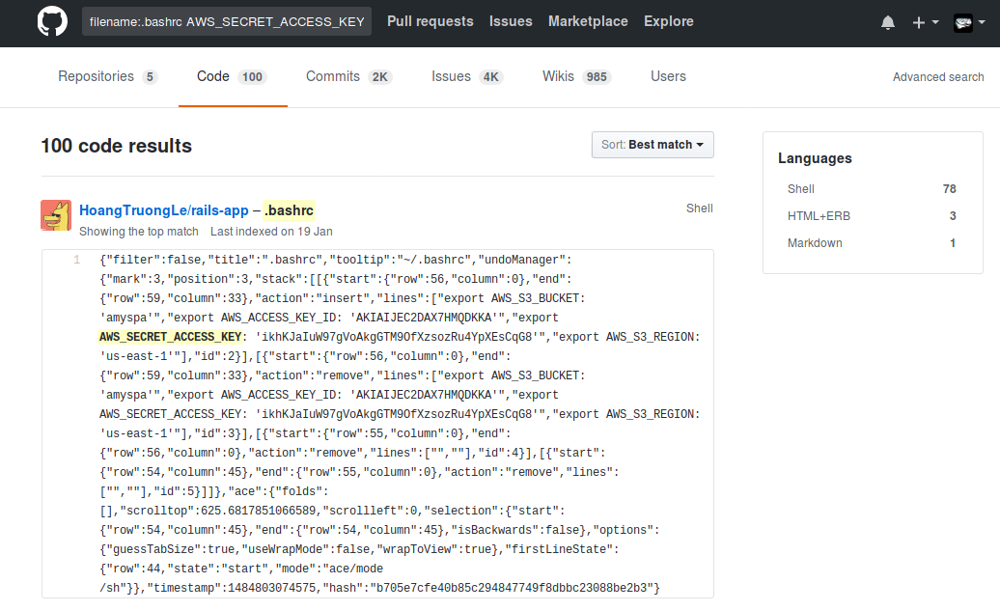

Vault, un gestionnaire de secret qui a du coffre
Capitole du Libre 2017 - Samedi 18 octobre 2017
Mathieu Cinquin
Sommaire
Pourquoi utiliser un gestionnaire de secrets
Présentation de Vault
La sécurité
Pour aller plus loin
Petite démo (selon le verdict du chrono)
Retours d'expérience
A Propos
Ingénieur Système Cloud
Contributeur à plusieurs projets Open Source
Passionné de supervision Open Source
Pourquoi utiliser un gestionnaire de secrets ?
Chiche, on va voir ce que cela donne sur GitHub !
On commence par les clé privées SSH :
Et si on regardait maintenant les commit avec "remove password" comme message
Et vu que c'est un track DevOps, on va regarder pour AWS !
Pour éviter les
“Et michel c'est quoi le mot de passe de la prod ????”
dans l'open space
Ou encore le syndrome du passage piéton avec le seul gars du service qui a tous les mots de passe sur son pc
Et pour terminer parce qu'on peut faire du DevOps sans faire l'impasse sur la sécurité
Présentation de Vault
Vault
Logiciel développé par Hashicorp (Vagrant, Consul, Packer...).
2 versions : une open-source (Mozilla Public license 2.0) et une entreprise (avec webui, HSM, replication, ...).
Sources disponibles sur GitHub.
Binaire en Go qui fait client et serveur.
Permet de stocker tout type de secrets (certficats, keystore, ...)
Possibilité d'architecture distribuée.
Toutes les communications entre l'extérieur et Vault se font en TCP (port 8200 par défaut).
Tout est répertoire et fichier.
vault mounts
Path Type Accessor Plugin Default TTL Max TTL Force No Cache Replication Behavior Description
cubbyhole/ cubbyhole cubbyhole_272614c7 n/a n/a n/a false local per-token private secret storage
secret/ kv kv_1970ddd7 n/a 86400 172800 false replicated key/value secret storage
sys/ system system_f2eeae6d n/a n/a n/a false replicated system endpoints used for control, policy and debugging
/vault/file/logical/3c36dfc0-b8ad-22f9-d9ec-d0e6a9a8aeda/hello # ls -alh
total 12
drwxr-xr-x 2 vault vault 4.0K Nov 12 16:33 .
drwxr-xr-x 3 vault vault 4.0K Nov 12 16:33 ..
-rw------- 1 vault vault 205 Nov 12 16:33 _world
Architecture

Storage Backend

Storage Backend s'occupe du stockage durable des données chiffrées.
Plusieurs Storage Backend sont disponibles :
- Azure
- CockroachDB
- Consul
- CouchDB
- DynamoDB
- Etcd
- Filesystem
- Google Cloud
- In-Memory
- MySQL
- PostgreSQL
- Cassandra
- S3
- Swift
- Zookeeper
Secret Backend

Secret Backend a en charge de la génération des différents types de secret.
Plusieurs Secret Backend sont disponibles :
- AWS
- Consul
- Cubbyhole
- Databases
- Key/Value
- Identity
- PKI
- RabbitMQ
- SSH
- TOTP
- Transit
Auth Backend

Auth Backend s'occupe d'authentifier l'utilisateur qui veut interagir avec Vault et de lui assigner ses permissions.
Plusieurs Auth Backend sont disponibles :
- AppRole
- AWS
- Google Cloud
- Kubernetes
- GitHub
- LDAP
- MFA
- Okta
- RADIUS
- TLS Certificates
- Tokens
- Username & Password
Audit Backend

Audit backend a en charge la gestion des logs de Vault.
Plusieurs Audit Backend sont disponibles :
- File
- Syslog
- Socket
Barrier

Barrier est l'élémént qui se trouve au milieu des échanges de données entre le Storage Backend et Vault.
Il garantit que seules des données chiffrées peuvent être écrites à l'extérieur de Vault.
Dans l'autre sens, il s'occupe de vérifier et déchiffrer à la volée les données qu'il va récupérer.
Barrier englobe tous les éléments de Vault sauf le Storage Backend et HTTP API.
Token Store

Token Store s'occupe de fournir à un client identifié un token pour communiquer avec Vault.
Le token est à la base de tout le processus d'authentification dans Vault.
Policy Store

Policy Store contient les permissions d'utilisation du Secret Backend.
Il envoie ses informations à Token Store afin de les lier au token fourni.
Core

Core est l'élément central qui va faire communiquer et travailler ensemble tous les autres composants.
Il s'occupe entre autre :
- d'appliquer une durée de vie au secre ;
- d'en vérifier la péremption ;
- de révoquer un secret ;
- d'envoyer toutes les actions à l'Audit Backend ;
- de gérer une certaine résilience avec un système de rollback.
HTTP API

HTTP API est l'élément qui permet à un utilisateur de communiquer avec Vault.
La communication entre le serveur et le monde extérieur (donc le client) se fait par HTTP(S).
Error reading mounts: Error making API request.
URL: GET http://127.0.0.1:8200/v1/sys/mounts
Code: 503. Errors:
* Vault is sealed
Sécurité
Le scellement

Analogie avec un coffre de banque où on doit franchir la porte blindée.
Par défaut, Vault est scellé. Il est nécessaire de l'ouvrir afin de pouvoir accéder aux secrets.
Création d'une clé de chiffrement à la 1ère initialisation de Vault.
Cette clé de chiffrement est protégée par une clé maître.
La clé maître est ensuite scindée plusieurs clés partagées (Shamir's secret sharing algorithm).
Il faut X (3 par défaut) de ces clés partagées pour desceller Vault.
Le chiffrement
Toutes les données qui sortent de Barrier sont chiffrées en 256-bit AES avec le mode GCM.
Il n'y a aucune confiance entre le monde extérieur (même le client) et le serveur. Il est donc nécessaire de mettre en place du TLS par dessus HTTP.
/vault/file/logical/3c36dfc0-b8ad-22f9-d9ec-d0e6a9a8aeda/hello # cat _world
{"Key":"logical/3c36dfc0-b8ad-22f9-d9ec-d0e6a9a8aeda/hello/world","Value":"AAAAAQKJ+ROyUkvPxSFXM0B5m0MrcrjKI3DSDA/3clKnhHLYlsKZ76cxPOU7SkCwHg=="}
Les permissions
Tout utilisateur n'ayant pas de permissions associées se voit tout refuser.
Les permissions décrivent quelles actions sont possibles sur un répertoire (Tout est fichier et répertoire dans Vault).
Les permissions sont écrites en HCL (HashiCorp Configuration Language) ou en JSON.
Petit exemple d'un fichier de permissions
# This section grants all access on "secret/*". Further restrictions can be
# applied to this broad policy, as shown below.
path "secret/*" {
capabilities = ["create", "read", "update", "delete", "list"]
}
# Even though we allowed secret/*, this line explicitly denies
# secret/super-secret. This takes precedence.
path "secret/super-secret" {
capabilities = ["deny"]
}
# Policies can also specify allowed and disallowed parameters. Here the key
# "secret/restricted" can only contain "foo" (any value) and "bar" (one of "zip"
# or "zap").
path "secret/restricted" {
capabilities = ["create"]
allowed_parameters = {
"foo" = []
"bar" = ["zip", "zap"]
}
}
Les permissions peuvent être appliquées à 0 ou n utilisateurs
Un utilisateur peut avoir plusieurs permissions qui lui sont associées
Les "leases"
Tout a une durée de vie dans Vault, les secrets et les tokens
Possibilité de révoquer avant l'heure ou de renouveller la durée de vie
Oblige l'utilisateur à régulièrement vérifier ses données. Vault n'avertit pas: aucune de notifications !
Une démo ! Une démo ! Une démo !
Pour aller plus loin
Une grande liste de librairies disponibles :
- Go
- Ruby
- C#
- Clojure
- Elixir
- Haskell
- Java
- Kotlin
- Node.js
- PHP
- Powerhsell
- Python
- Rust
- Scala
- Ansible <3
- Chef
- Puppet
- Salt
Et surtout l'intégration avec des outils de déploiement et de configuration :
Petit exemple avec Ansible
# templates/example.j2
# Generic secrets
{{ lookup('vault', 'secret/hello').value }} # world
# Generic secrets with parameters
{{ lookup('vault', 'pki/issue/example-dot-com common_name=foo.example.com format=pem_bundle').certificate }}
# Specify field inside lookup
{{ lookup('vault', 'secret/hello', 'value') }} # world
# Dynamic secrets
{% set aws = lookup('vault', 'aws/creds/deploy') %}
access_key = {{ aws.access_key }}
secret_key = {{ aws.secret_key }}
Plusieurs interfaces web opensource sont disponibles dont :

Retours d'expérience
Avantages
Aucun problème rencontré en 9 mois d'utilisation
Très bonne intégration avec Ansible
Tout est fichier et répertoire (facilité de sauvegarde)
A même plu aux devs !!!
Inconvénients
Documentation pas claire du tout
Les leases, les leases, les leases...
Tout est fichier et répertoire (attention à l'organisation et la hierarchie des secrets)
Le support et la partie commerciale sont à éviter
Et voilà !
Merci de votre présence et de votre attention